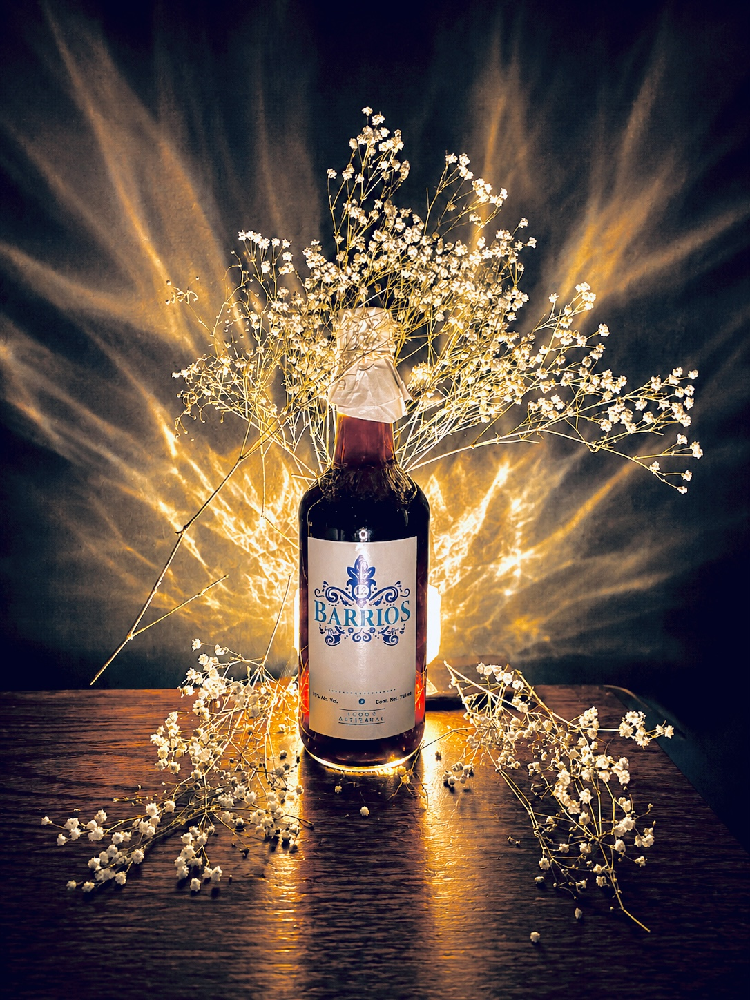
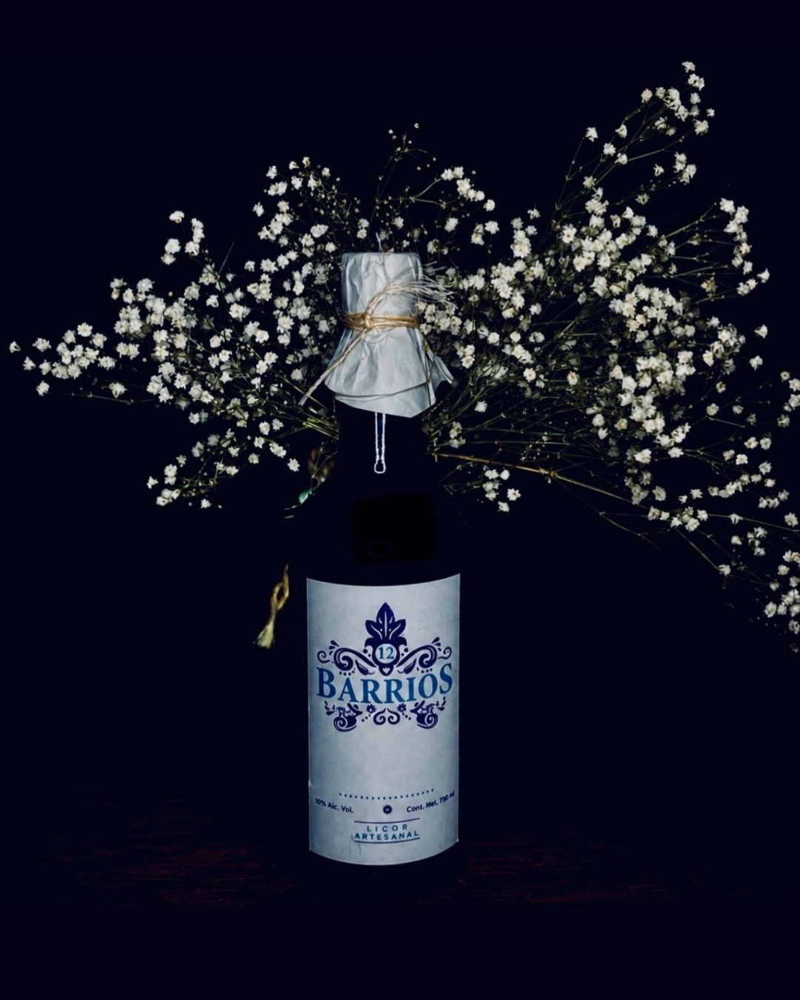
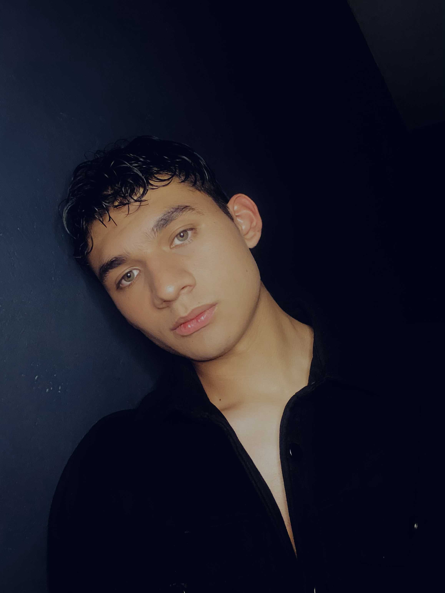
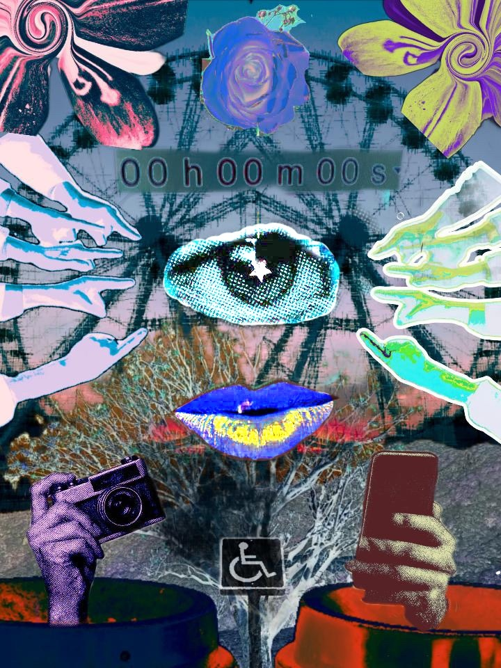

PORTAFOLIO
Proyectos seleccionados.


.JPG)

.JPG)

Artista Multidisciplinario

Soy Juan Valdés, artista multidisciplinario y desarrollador creativo. Mi trabajo explora la relación entre la imagen, el sonido, el diseño y la tecnología para construir experiencias visuales con identidad propia.
A través de la producción audiovisual, la fotografía, el diseño digital y el desarrollo web, transformo ideas en proyectos que combinan sensibilidad artística, estrategia y funcionalidad, buscando siempre generar un impacto visual auténtico.



Destellos nace de la saturación visual que habita nuestra vida cotidiana en las redes sociales, la escuela, el transporte, el hogar. Vivimos rodeados de imágenes que consumimos de forma automática, sin retenerlas ni comprenderlas del todo. Nos convertimos en recipientes de estímulos que generan cansancio y dispersión. Este collage es esa experiencia: universal en su origen, particular en su percepción. Una imagen que no pide ser entendida, sino sentida.
He participado en diversos proyectos artísticos, audiovisuales y culturales, desarrollando habilidades en expresión escénica, trabajo colaborativo y producción creativa. Durante 2024 y 2025 formé parte del elenco de bailarines de la Mega Procesión de las Catrinas, participando en una de las celebraciones culturales más representativas de México. Esta experiencia fortaleció mi disciplina, capacidad de interpretación y trabajo en equipo dentro de producciones de gran formato. Además, he colaborado como bailarín en distintos proyectos de arte y presentaciones escénicas, explorando la relación entre el movimiento, la narrativa y la expresión visual. En el ámbito audiovisual, he participado como extra en cortometrajes, adquiriendo experiencia en producciones cinematográficas y comprendiendo la dinámica de trabajo en sets de grabación, desde la preparación hasta la ejecución de escenas. También he colaborado como modelo para proyectos fotográficos, participando en sesiones de retrato, fotografía conceptual y producciones visuales, contribuyendo a la construcción de propuestas creativas desde una perspectiva artística. Estas experiencias complementan mi formación en Arte y Comunicación Digital, permitiéndome integrar disciplinas como el diseño, el arte, el lenguaje audiovisual y la producción visual para desarrollar proyectos creativos con una visión multidisciplinaria.
Juan Valdés
Correo
estvestudio@gmail.com
Instagram
@memeaccountve